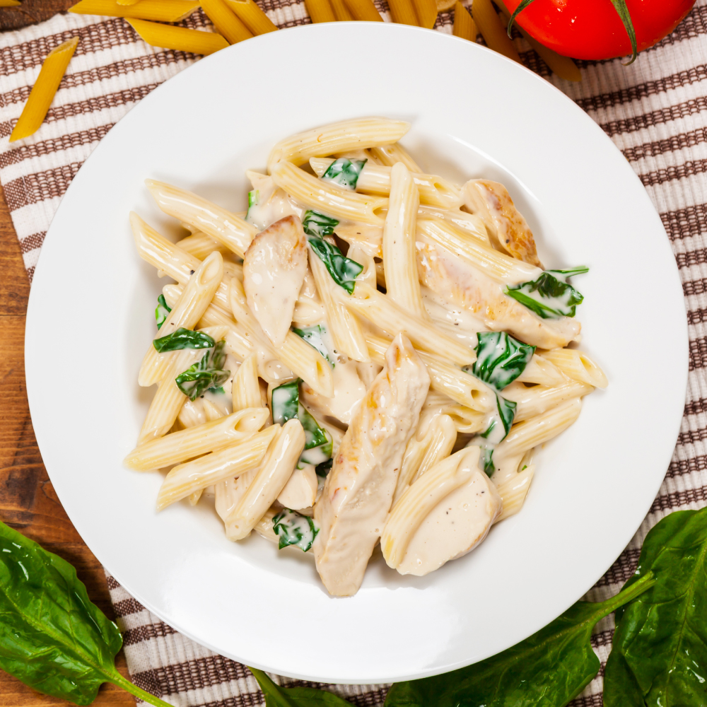

Penne Alfredo

Description
Alfredo Pasta is an Italian wonder dish made using fresh pasta, veggies, chicken pieces, combined with some butter, cream and cheese.
The melting cheese creates a creamy, rich delicious sauce that caresses the pasta.
Ingredients
For Cooking the Alfredo Sauce
- 2 tbsp butter
- 3 tbsp flour
- 3 garlic cloves [minced]
- 2 cups of milk
- 1/2 tsp dried basil
- 1/2 tsp dried oregano
- 1/2 cup of parmesan cheese [shredded]
- 1 tsp salt & pepper
For Cooking the Chicken
- 650g of Chicken breast [cut into strips]
- 2 tbsp of butter
- 1/2 tsp oregano [dried]
- 1/2 tsp basil [dried]
- 1 tsp salt & pepper
- 400g of Penne pasta [cooked till Al Dente]
- 1/4 cup parsley [dried or fresh]
- 1/4 cup of parmesan cheese [shredded]
Instructions
-
Heat a pan on medium flame and melt some butter in it. Add the chicken pieces and sauté them. Then add oregano, basil, salt and pepper.
Stir the pieces and sauté for 8-10 minutes. Once the chicken is tender and cooked, transfer it to a plate and set it aside.
-
In the same pan, add butter again. Once it melts, add the chopped garlic and sauté it. Once it is soft, add half the flour and mix it.
Then add the rest of the flour and mix it again. Add the milk little at a time and keep stirring to avoid lumps. As the sauce begins to thicken, add oregano, basil, salt and pepper. Stir well. Then add Parmesan cheese and mix until it melts.
-
Take a bowl and add the cooked penne pasta to it. Then pour the sauce over the pasta. Then add the chicken pieces and give a good mix.
Add extra Parmesan cheese and sprinkle fresh parsley. Mix well and serve.